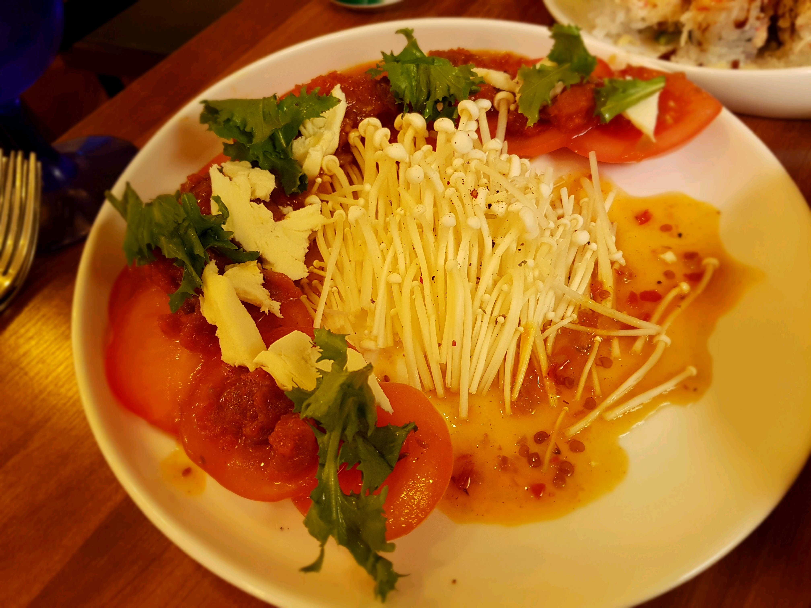
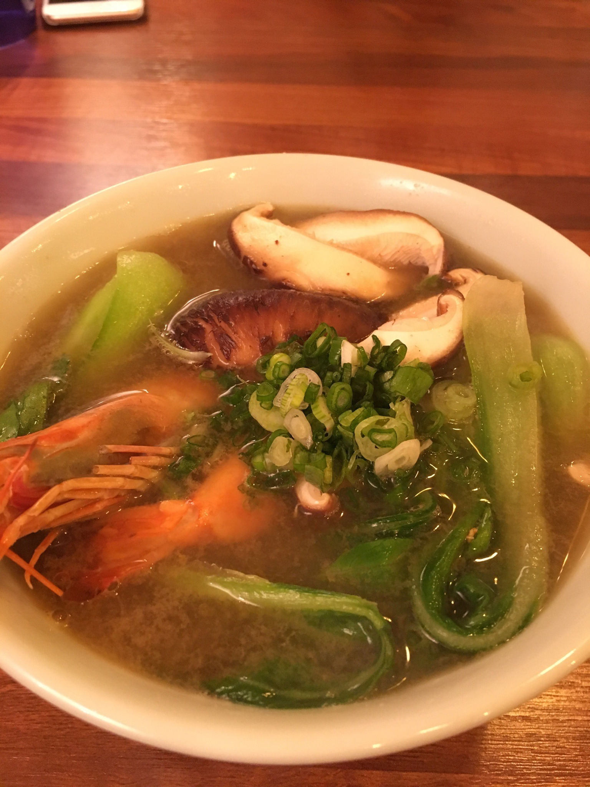
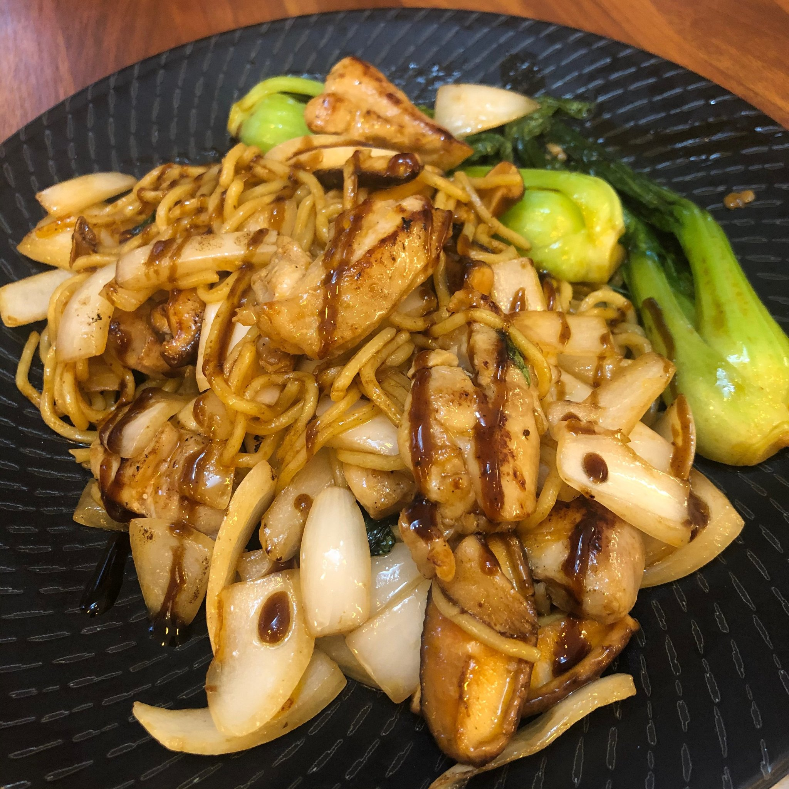
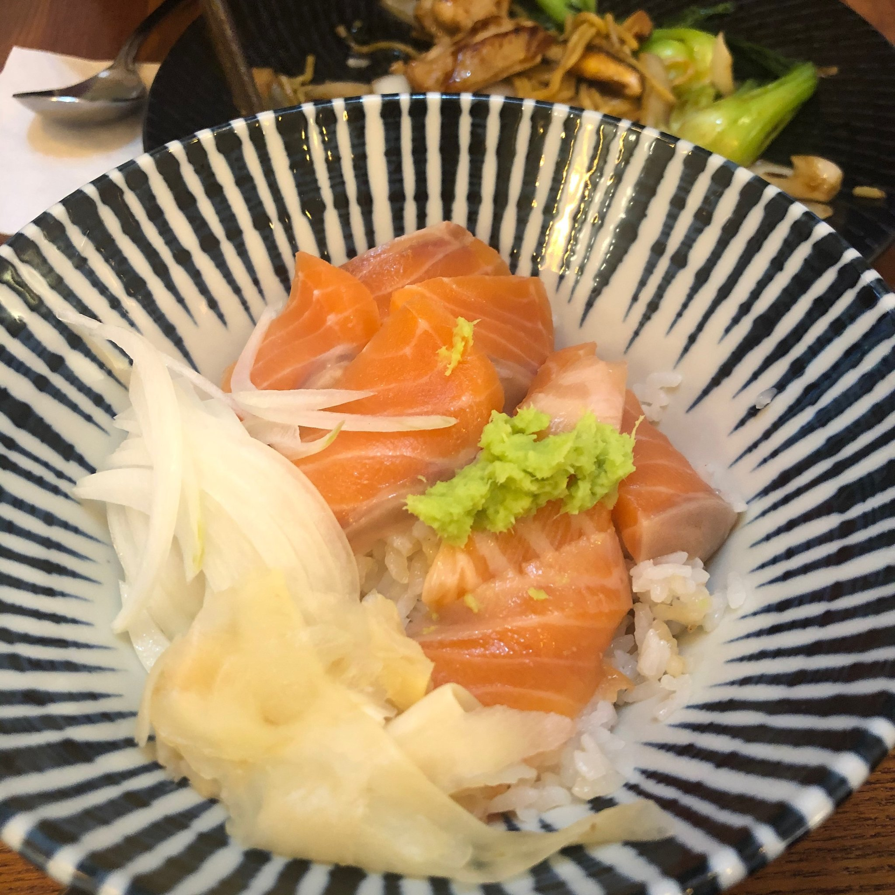
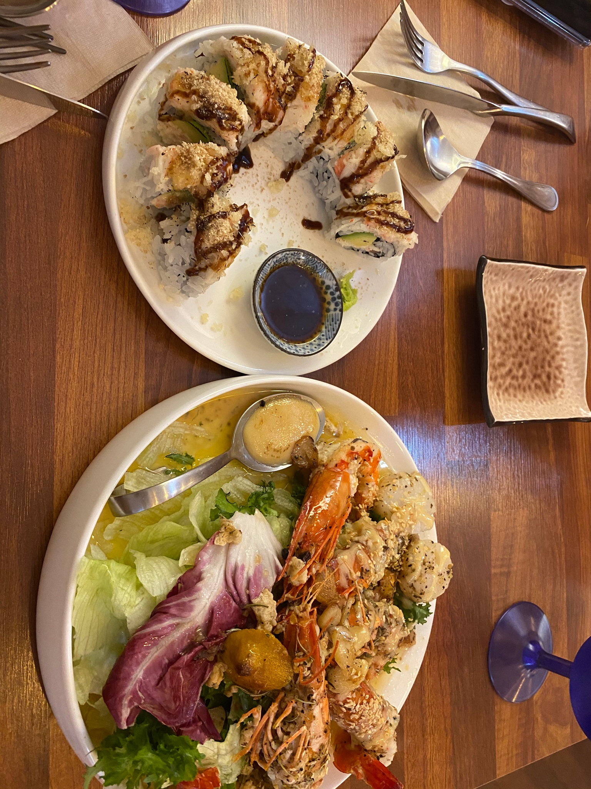
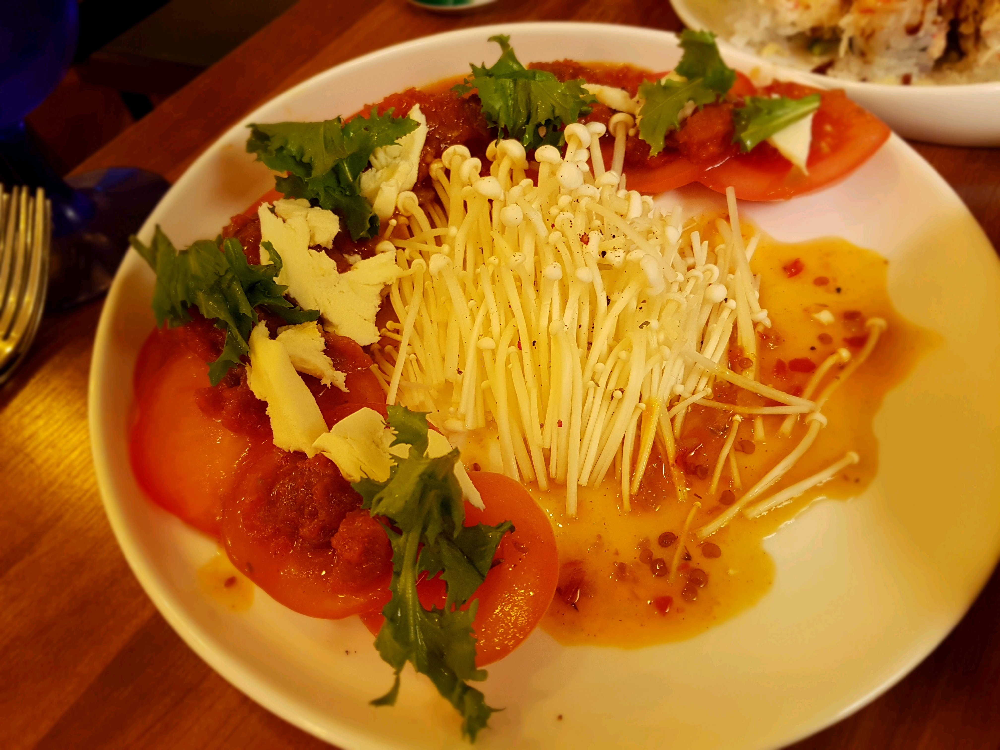
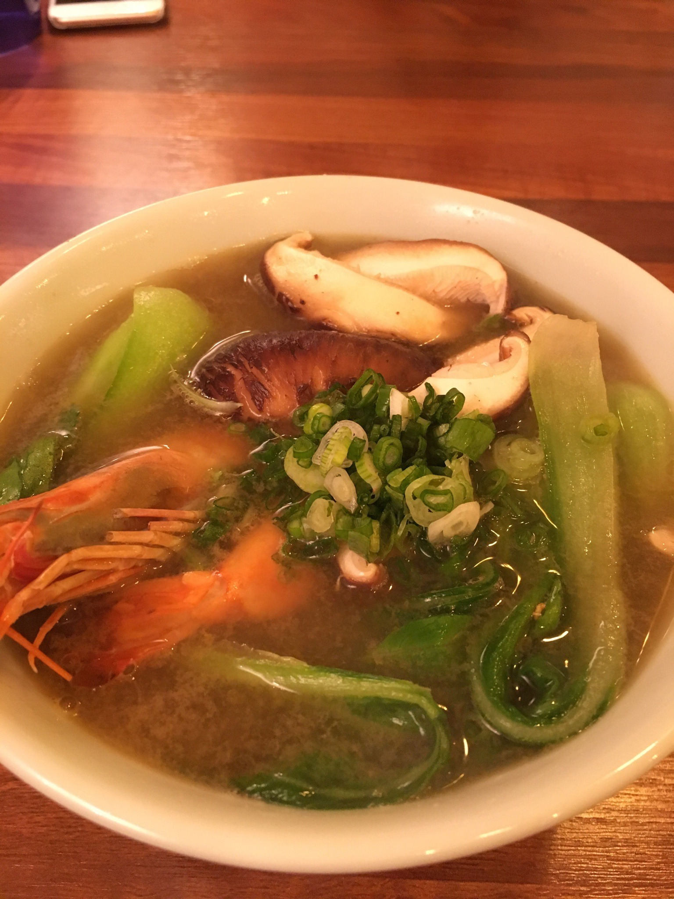
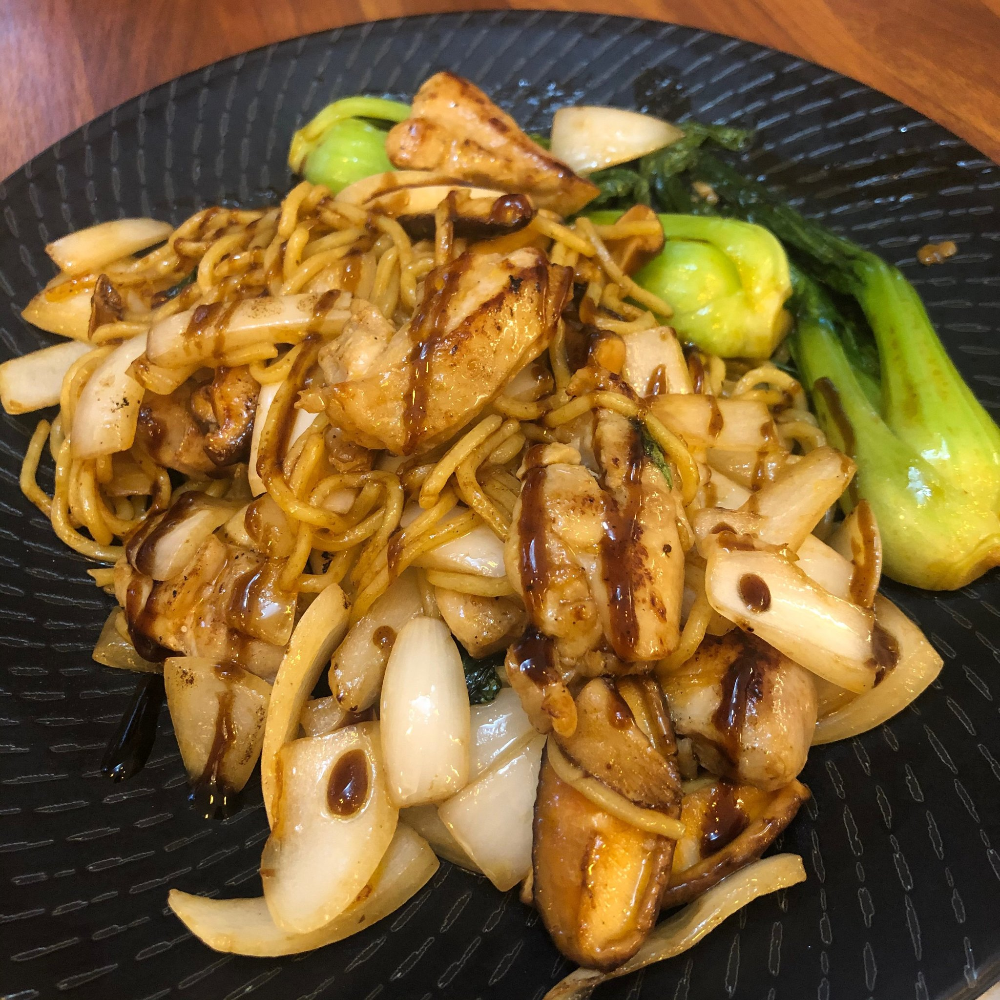
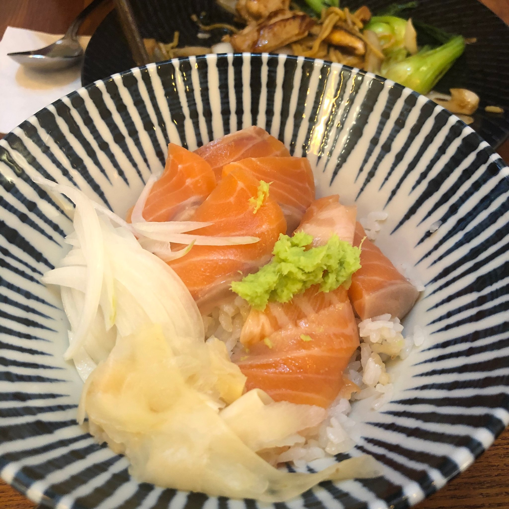
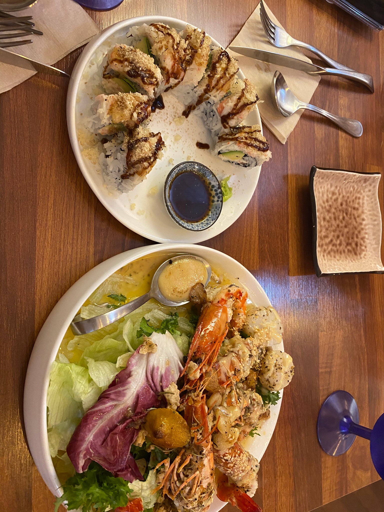

Best restaurant I recommend
수빈이가 추천해주는 최고의 맛집!!
 









Fusion Menu
가게 이름 : 모코
주소지: 서울특별시 서초구 방배로28길 16 세광빌딩 1F
메인메뉴 : 야키소바, 우나기동
후기 및 평가: 퓨전같은,,? 퓨전 아닌..? 정갈한 일식
깔끔하고 정갈하며, 자극적이지 않다. 정갈한 우동은 다른 어떤곳의 우동보다 가장 떙기는 맛이다. 정갈한 마음으로 다먹으면, 길을 가다가 다시한번 생각날것 같은 맛이다.
10점 만점에 8점
종류별로 선택해보기